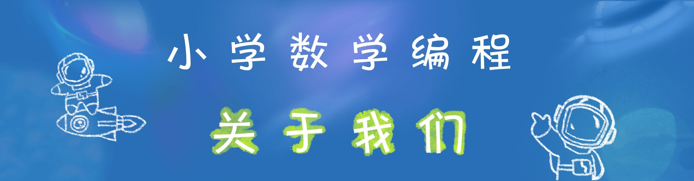

二年级结束时，我和爸妈商量后决定探索并尝试一种新的学习方式——自主学习。自主学习可见的好处就是“灵活”。学习时间灵活、学习地点灵活、学习内容灵活，可以完全按照自己的想法学自己想学的东西，做自己想做的事，进度也由自己掌控，某种意义上算是实现了真正的个性化教育。
互联网时代的学习资源和学习工具前所未有的丰富，所以自主学习最困难的部分其实并不是知识的学习，而是需要建立强大的自我领导力，包括：承担责任、积极主动、目标导向、提出问题、勇于尝试、从错误中学习成长等，总之都是一些以前在学校用不上的品质。在学校的时候，所有事情学校和老师都安排好了，不需要自己考虑。可现在几乎所有事情都要自己做决策，我这才发现做选择实在不是件容易的事，需要从各个方面收集信息，还要经常向他人求助。项目管理和时间管理对我而言也很困难，动辄使我陷入制定计划、执行不力、修改计划的循环之中。
我大概用了 2-5 年的时间，才慢慢建立起支撑自主学习的习惯和能力。这期间虽然比较挣扎，不断产生和解决各种问题，投入学习的时间也不是很多，但学习效率还算比较高，基本都能大幅提前完成同期的学校课程。节省下来的时间主要用于：
- 学习学校课程以外的知识和技能；
- 上网浏览网页、看视频；
- 大量阅读中英文书籍；
- 玩不同类型的游戏；
- 参加实践活动；
- 四处旅行、换不同的城市居住；
- 帮爸妈照顾弟弟小续、4 岁以后教他学习。
https://felixspace.com/ 是我 9 年级以前的学习记录网站。总结起来学习方面主要做了几件事：
- 培养自主学习习惯；
- 建立广博的知识体系（包括数学；科学；社会学；计算机等工程技术；语言、艺术等人文学科）；
- 尽可能参加各种实践项目，与具有不同背景和来自不同行业的人合作；
- 寻找适合的学习资源和学习工具；
- 探索各学科的高效学习方法。
有了我自主学习的经验和教训，小续 6 岁时也正式加入自主学习的行列，于是也就有了小学数学编程的高效学习项目。
为了方便申请大学，我 9 年级开始上网校，重新回归学校体系。我目前是一名高中生，主要兴趣是游戏设计、计算机科学、数字媒体、心理学和学习科学 (Learning Science)。
有关于小学数学编程项目或自主学习的任何问题与建议，欢迎与我联系：zhangxufei05@hotmail.com。